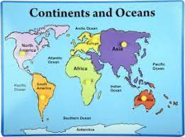

A brief info about our continents and oceans
There are 7 Continents are present in our world. The 7 continents are given below:
Asia, Europe, Africa, North America, South America, Australia, Antarctica.
There are 5 Oceans are present in our world. The 5 Oceans are given below:
Pacific Ocean, Atlantic Ocean, Indian Ocean, Arctic Ocean, Antarctic Ocean.
If the Earth's surface were 100% ocean, weather would appear in belts and zones (reflecting the structure of the atmospheric cells), and the planet might look like some blue-and-white mini-Jupiter. But the Earth has continents, and the flow of ocean water is restricted by their presence.
Like air, moving water is also subject to the Coriolis Effect; thus, water confined to an ocean basin tends to circulate in a huge gyre, clockwise in the northern hemisphere and counterclockwise in the southern hemisphere.